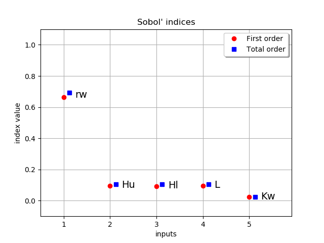

Sobol’ sensitivity indices from chaos¶
In this example we are going to compute global sensitivity indices from a functional chaos decomposition.
We study the Borehole function that models water flow through a borehole:
With parameters:
- : radius of borehole (m)
- : radius of influence (m)
- : transmissivity of upper aquifer ()
- : potentiometric head of upper aquifer (m)
- : transmissivity of lower aquifer ()
- : potentiometric head of lower aquifer (m)
 : length of borehole (m)
: length of borehole (m)- : hydraulic conductivity of borehole ()
In [1]:
from __future__ import print_function
import openturns as ot
from operator import itemgetter
In [2]:
# borehole model
dimension = 8
input_names = ['rw', 'r', 'Tu', 'Hu', 'Tl', 'Hl', 'L', 'Kw']
model = ot.SymbolicFunction(input_names,
['(2*pi_*Tu*(Hu-Hl))/(ln(r/rw)*(1+(2*L*Tu)/(ln(r/rw)*rw^2*Kw)+Tu/Tl))'])
coll = [ot.Normal(0.1, 0.0161812),
ot.LogNormal(7.71, 1.0056),
ot.Uniform(63070.0, 115600.0),
ot.Uniform(990.0, 1110.0),
ot.Uniform(63.1, 116.0),
ot.Uniform(700.0, 820.0),
ot.Uniform(1120.0, 1680.0),
ot.Uniform(9855.0, 12045.0)]
distribution = ot.ComposedDistribution(coll)
distribution.setDescription(input_names)
In [3]:
# Freeze r, Tu, Tl from model to go faster
selection = [1,2,4]
complement = ot.Indices(selection).complement(dimension)
distribution = distribution.getMarginal(complement)
model = ot.ParametricFunction(model, selection, distribution.getMarginal(selection).getMean())
input_names_copy = list(input_names)
input_names = itemgetter(*complement)(input_names)
dimension = len(complement)
In [4]:
# design of experiment
size = 1000
X = distribution.getSample(size)
Y = model(X)
In [5]:
# create a functional chaos model
algo = ot.FunctionalChaosAlgorithm(X, Y)
algo.run()
result = algo.getResult()
print(result.getResiduals())
print(result.getRelativeErrors())
[0.0205653]
[7.19232e-07]
In [6]:
# Quick summary of sensitivity analysis
sensitivityAnalysis = ot.FunctionalChaosSobolIndices(result)
print(sensitivityAnalysis.summary())
input dimension: 5
output dimension: 1
basis size: 40
mean: [73.9426]
std-dev: [28.0411]
------------------------------------------------------------
Index | Multi-indice | Part of variance
------------------------------------------------------------
1 | [1,0,0,0,0] | 0.655359
2 | [0,1,0,0,0] | 0.0946395
4 | [0,0,0,1,0] | 0.0930073
3 | [0,0,1,0,0] | 0.0927474
5 | [0,0,0,0,1] | 0.0226136
------------------------------------------------------------
------------------------------------------------------------
Component | Sobol index | Sobol total index
------------------------------------------------------------
0 | 0.662486 | 0.692338
1 | 0.0946545 | 0.105777
2 | 0.0927636 | 0.103943
3 | 0.0940617 | 0.105893
4 | 0.0226136 | 0.0254699
------------------------------------------------------------
In [7]:
# draw Sobol' indices
first_order = [sensitivityAnalysis.getSobolIndex(i) for i in range(dimension)]
total_order = [sensitivityAnalysis.getSobolTotalIndex(i) for i in range(dimension)]
ot.SobolIndicesAlgorithm.DrawSobolIndices(input_names, first_order, total_order)
Out[7]:

In [8]:
# We saw that total order indices are close to first order,
# so the higher order indices must be all quite close to 0
for i in range(dimension):
for j in range(i):
print(input_names[i] + ' & '+ input_names[j], ":", sensitivityAnalysis.getSobolIndex([i, j]))
Hu & rw : 0.009536222712892008
Hl & rw : 0.009530629479565667
Hl & Hu : 1.3936259801171157e-05
L & rw : 0.008923015390024751
L & Hu : 0.0012697543282222151
L & Hl : 0.0012905102200038215
Kw & rw : 0.0018622904639265824
Kw & Hu : 0.000302490552292122
Kw & Hl : 0.0003439993123678421
Kw & L : 0.00034753666470284497